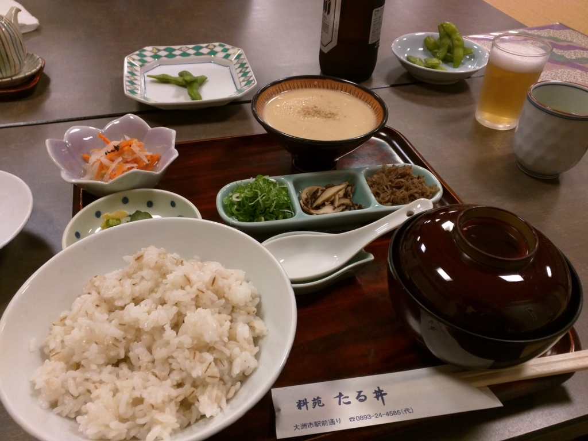

ゆるふわ.rb in 大洲 でお腹いっぱいに Ruby を学んできた。
公開日：
もうだいぶ前の話になってしまったが、@nakaji に誘われて「ゆるふわ.rb in 大洲」に参加。なのに肝心の @nakaji が参加できなくなったのには少し同情した。
当日は @ramusara さんと一緒に鈍行で大洲へ。この前はバイクで行ったのだけど、電車列車もなかなか良いものだと思う。
おひるごはん

雨がしとしとと降る大洲に着くと、まずは腹ごしらえ。“たる井”というどこかで聞いたような名前の旅館でランチをやっていたので、さつまめしをいただいた。
さつまめしというのは南予の郷土料理なのだそうで。うまく表現しがたい、割と面白い味だと思う。
おろした魚をすりつぶし、軽く炙る。焼き味噌を作り、すりつぶした魚を加え、さらに焼く。それを煮だし汁でのばし、味を付けたこんにゃくやキュウリを混ぜ、あたたかいご飯（料理店では麦飯のこともある）の上にかけて食べる。薬味として好みにより、珍皮や刻みネギなどを散らす。 宇和島市ではこずな（アマダイ）を使う料理が最高とされる。家庭では、焼いた身をスリコギですりつぶし作られる。慣れてくるとスリコギの音で出来がわかり、見なくても判断できるようになる。昔はすりつぶすのは子どもの役割であったが、疲れた子どもが止めようとしても、大人はまだ出来上がっていないことがわかるので「まだまだ」という対応をする光景が日常的にあった
サラサラと食べられて、ランチにはぴったりだった。ちなみに @ramusara さんはガッツリと天ぷら定食を食べてたが、あとでそれを大変後悔することになる（別に不味かったというわけじゃないｗ）。
勉強するふりをする
会場は大洲城のふもとにある市民会館――のなかにある調理室。IT 勉強会にたいへんふさわしくないところだと思う。ウェルカムドリンクとしてあおさ汁がふるまわれたが、これが雨に打たれた体に大変やさしい。ネームプレートが配られ、名前と日ごろ利用している開発環境を書くように指示される。自分は「Visual Studio と WebMatrix」と書いておいたが、WebMatrix を知ってる参加者なんかいるんだろうか。
開会のあいさつと参加者の自己紹介のあとに、@ogin_s57 さんが RubyMine の秘技を実演。ちょっとしたミスはあったけれど、参加者によるデバッグが功を奏し、無事に終了した。図らずも RubyMine のデバッグ機能を駆使することになり、とても実践的なデモになった。
さて、ここからが本番。
ボーっと眺めているうちに、立派な刺身盛りができあがった。ほかにも豆腐と日本酒の差し入れがあり、午後2時過ぎにして早くも完全に宴会モードに。自分は途中の大洲の商店街でビールを購入、地元の振興に一役買う。
それにしても、お刺身が絶品。天ぷら定食でおなかがいっぱいの @ramusara 氏が心配だったが、それでもかなり食べていたようだった。
5時ぐらいに調理場を撤収。近所のショッピングモールにあるゲームセンターで、なぜか魚釣りゲームをやった。自分はゲームも魚釣りも得意じゃないのだけど、これはだいぶアツい。なんかデカい魚が釣れてコインがじゃらじゃら出てきたが、そのあとにやったコインゲームに全部吸い込まれてしまった。
そのあと、少し二次会をやり、電車で帰った。大洲駅に行くとちょうど松山行きの普通列車がでるところ。運がよいとみんなで喜んだが、途中の駅で30分ぐらい通過待ちやらなんやらで足止めを食らい、ちょっとだけ各駅停車に乗ったことを後悔する。
生還！

そんなこんなでいろいろあったけど、無事松山へ。二次会で飲み足りなかったので、JR 松山駅の前の居酒屋へ繰り出し、伝説のチキン南蛮を食べたり、エリンギを焼いてみんなで生還を祝った。
楽しかったのでまた参加したいです（＾ｖ＾）ｺﾝﾄﾞﾊBBQﾀﾞｰ